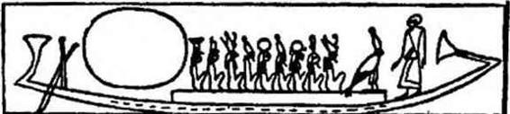

Şekil — 19
Douat'ın eli bıçaklı kapıcıları. - *Biritish Museum»daki Anhal Papirüsü, CXLVI
adamakıllı korkunçtur. Ama ölü için takip etmiş olduğumuz yol, onu yaratmış olan yıldıza doğru dönüş yoluydu ve o, yeniden dirilişinin eşiğinde, Batı Dağının üçgen tepesinin arkasında güneşin battığı tam noktayı buluyordu. Amon rahipleri kalsit (krista- lize kalsiyum karbonat) damarlı kalker kayasına oyulmuş koridor boyunca ilerleyip, boyalı tabutu, bütün Teb mezarlarında olduğu gibi, doğudan batıya yönelmiş, üzerinde yıldızlar işlenmiş mavi tavanlı Altın Salonun cenaze odasına yerleştirilince ölü, doğruluğunu sağlayacak sınavlara hazırlanmadan önce, sevinecektir. Yaşayanlara gelince, buradan birkaç kilometre uzakta Nil kıyısındaki sulanmış ovalara, Louqsor ve Karnak’daki vahaların serinliğine zevkle döneceklerdir... Onlar da, bu dünyayı az bir zaman önce terk edenin, alt dünyanın on iki bölümünde anne ve babasını görmekle sevineceklerdir. O yerlerde, Batımn uzun koridorlarında veya kimsenin hayal edemeyeceği uzayın ıssız boşluklarında, bazan, uluyan ruhlar ve kuma oturmuş maymunların ümitsizce Râ’yı çağırdıkları işitilir. Yalnızca ölülerin oushebtis’- leri, - mumya şeklindeki, ölünün ismini taşıyan ve öbür dünyanın bütün zor işlerinde onun yerini tutmakla yükümlü küçük heykelcik - ile girebildikleri İyi kapıdan kan olarak girmeden önce, dik olarak tutulan mumyanın önünde son ve zorunlu cenaze seremonileri yapılacaktır: sihirli aletle (herminette) ona nefesini iade edecek ağız ve gözlerin açılma töreni, suyla temizlenme, bazı formüllerin okunuşu, tütsüler. Fakat ölüye ebedi mutluluklar vaad edilirken, karısı acısını ifâde etmekten geri kalmaz. Onun ağlayışlarına kayıtsız rahiplerin önünde, mumyaya sarılır, kumaş ve alçıdan ( stuc) yapılmış maskesine yüzünü dayar. Dövünür ve inler; ağlayıcılar korosu da, kirâlanmış sızlanmalarını dulun ağlamalarına karıştırarak onu destekler. Kuşkusuz, ölü, sihirli akım burnuna girmişse zevklenmiş olacaktır; çünkü, eşinin ağlamaları ve okuyucu rahibin dualarım işitmek, şu biçimde sürdürülünce kulağa çok hoş gelir : «Felâket! Felâket! Ben senin sevgili kız kardeşinim... Niçin şimdi benden o kadar uzaktasın? Sen ki benimle şakalaşmayı ve beni sevmeyi o kadar severdin!-Bu gün güzel bir gündür; çünkü mutlu kişi Osiris’in bedeninde yaşayacaktır... - Felâket! Felâket! Susuyorsun ve hiç bir şey söylemiyorsun! Sen ki, o kadar hizmetçin vardı; belki pa-
rıltılı gözlü canavarlardan başka kimsenin olmadığı bir yerdesin! - bugün güzel bir gündür; çünkü insan, çakal, maymun, şahin tarafından korunacaksın; bunlar Horus’un dört yüzüdür... - Felâket! Felâket! Acım sonsuzdur! Sen ki benimle, Nil kıyısında, bahçelerde dolaşırdın; bacakların şeritlerle sıkıca sanlı! Beni tanıyor musun? Ben karın, sevgili kız kardeşinim! - Sevinç, şimdi rahatça İstirahat edenindir. Osiris’in djed işaretiyle, Osiris’in yiyeceklerinden yiyecektir... - Felâket! Felâket! Vücudum yalvarıyor; ama seninki buz gibi. - Bugün karnında bir skarabe taşıyan mumya için güzel bir gündür. - Ben senin kızkardeşinim; sen beni bıraktın ve ben eve yalnız döneceğim...» Son ritler tamamlanırken hizmetçiler de cenaze ziyafetini hazırlarlar. «Issız Vâd!»de, dallar ve çiçeklerle kulübecikler yaparlar. Masaların etrafında toplanılır. Herkes nefis yiyeceklerden yer. Bu ara lotüs çiçekleriyle süslenmiş çıplak dansözler, akşamın yumuşamış ışığında daha da güzel görünürler ve Çok Eski Mısır’ın, herblrl ellişer bin yıl saltanat sürmüş tann-firavunlarca idare edilen, za- manların başlangıcındaki esrarlı Mısır’ın hikâyelerini canlandırırlar. Bununla beraber, içkilerin, şarkıların, dansların etkisiyle, davetlilerin asık yüzleri canlanır ve ölünün böyle güzel bir günü için ve serbest hale geçmiş ka’sı için sevinirler. Cenaze yemeği neş’ell sofra arkadaşlarının bir açık hava ziyâfeti haline gelir; ağlayıp dövünmesini o kadar iyi bilen ve mimiklerine gerçekmiş gibi hâkim olan ağlayıcılar bile, yiyeceklerin etrafına toplanmış davetlilerin gürültülü keyiflerini paylaşmaktan geri kalmazlar. Yavaş yava$ batan güneşin son ışıkları, Karnak ve Louqsor’un. Nil’in öbür kıyısında görülebilen mâbetlerlni yalayan acayip bir ışıkla aydınlatırken dansözler daha hareketli görünür ve bazı kimseler, onları daha şevhetli bir biçimde hayal ederler; bronz ve abanoz renkli, hızla değişen parıltılarla danseden, gerdanlıklarla ve lotüs çiçeklerinden kolyelerle, süslenmiş güzel kokular sürünmüş bu büyüleyici vücutlara bakarken, ölüye tütsü yakanlar seve seve unutulur... Bununla beraber bu eğlentinin çok uzamaması uygun görülür ve artık bıkmış merâsimciler, gece, canlıların âlemini güzellikleri ile örtmeden, Teb’e dönerler. Herkes bir parça, arkasında, «çölün vâdisinin güzel bir yerinde» bıraktığı ölüyü düşünür; kendisi için arzulamaksızın, Douat’ın yaratıkları arasında işlerini yürütmesini bilen ölünün sevincini zihninde canlandırır. Bu ölüden bir daha bahs edildiğini hiç istemezler ve onun hakkında kötü söylemekten korkarlar. Çünkü bir gün, ölünün, kötülük yapmak için rüzgârla kalkmak ve sinsice akraba veya dostlarının rahatlarını bozmak, dolunay zamanı onların ruhlarını, kokularını, muskalarını çalmak, burun deliklerini, karaciğerlerini, yeraltındaki şeytanların ve yarım şeytanların çıkardıkları o acayip nefeslerle zehirlemek aklına gelebilir.
VII. BAB
ARKEOLOGLARIN «EBEDİYET EVLERİ»NDE BULDUKLARI ŞEYLER.
Arkeolojik araştırma guruplarının kazılan eşsiz çeşitlilik ve zenginlikteki, Mısırlıların mezarlarında biriktirdikleri cenâze eşyalarını ortaya çıkarmıştır. Ölü, hayatında sahip olduğu herşeyi «Ebediyet Evi»nde buluyor. Öbür dünyadaki rahatının, menfaat- siz olmasa bile, dikkatli bir özen konusu olacağından emin bulunuyordu. Bilginler, mezar odalarında, gerçek lüks eşya pazarlan, birbiriyle ilgisi olmayan eşya yığınları buldular: güzel Ölülerin sarı yüzlerini süslemek için boya çanakları, perukalar, savaş arabaları, mumyalanmış koyun butlan; bütün bunlar gelişigüzel yığılmış ve mumyalanmış ölü Osiris’i temsil eden yeşil ve mavi heykelciklerle, hazır zıpkınlar, zeytin ve persea (Avukat armudu anlamına gelirse de bu meyvenin Amerika kökenli olduğu düşünüldükte bir çeviri hatası olsa gerektir) dallarından yapılmış zarif buketler, yapıcısının mührü vurulmuş İyi cins şarap küpleri, meş’aleler, şeffaf kuartzdan vazolar, mumyanın ritüel hazırlanışı sırasında kullanılan kutsal hayvanlar biçiminde yataklar, ölülerin çıktığı mahkemede etkili olabilecek «kalp skara- beleri* - bunların üzerine,kopya edenler şu duayı kazımış bulunur: «Ey anamın bana verdiği kalp! Ey bedenimin bir parçası olan kalp! Karanlıklarda tanıklık edeceğin zaman aleyhimde bulunma; Anubis, Thot ve Osiris’in karşısında benim sözümün düşmanı olma... Hâkimlerin terâzisi önünde benim gibi ol ve ismimin kokusunun kokmuş çakal gibi olmasına müsaade etme!» İşte, firavunların Mısır’ındaki Mısır mezarlarında bilginlerin çı-
kardığı envanter! Sem rahiplerinin elbiseleri (bunlar ölülerin ağız ve gözlerini küçük parmaklariyle açıyor, onları yağlıyor, saçlarını düzeltiyor, şeritlerle süslüyor, Osiris’in göğsünde çaprazlama tuttuğu asâ ve kırbaç gibi, göğüslerine çaprazlama asâ ve kırbaç koyuyorlardı); Semâvî Nil’in her iki kıyısındaki Elize Kırlarında avlanmaları için âletler; şeffaf kaymak taşından içine kokular ve kıymetli yağlar konulmuş vazolar; Râ, Teb Araon’u veya Osiris dirilme gününde açılacak Dünya Yumurtası’nı yapan Ptah adına borular; (kıyamet günü İsrafil’in çalacağı boruyu hatırlayalım! ÇN.) kutsal Amon kazlan; uçlarına, cenaze kayıklarının aşağı dünyanın sularında kaybolmaması için Horus’un gözü resmedilmiş sihirli kürekler; bugün bile Teb ovalarında Fellâh’ların ellerinde görülenlere benzeyen heket sopalan; Lübnan sedirinden yapılmış, içine papirüsten sandallar, üçgen peş- temallar, okçu eldivenleri konmuş tahta çekmeceler bulundu. Kâtiplerin mezarlannda ince kamışlarla dolu kalem mahfazaları, her memurun yazmak ve saymak için gereksinme duyduğu aletler, yani mühreler, (fr. Lissoire: parlak ve pürüzsüz bir deniz kabuğu olup kâğıdı parlatmakta kullanılır) su kabı, gereksinme duyulacak her rengi taşıyan paletlerden hiçbiri; - bütün bu eşya, papirüs özünden yapılmış, üstü bez kaplı sepetlerde bulunuyordu - unutulmamıştı. Jean Capart’ın dikkati çektiği gibi, piskoposların (eveklerin) kine benzer, Osiris’in kudret ve krallığını simgeleyen asâlar ölülerin milyonlarca yıllık mevcudiyetini gösteren Ankh işâretl ve şeritlerin arasına konulmak unutulmazsa ölüye rahat ve dirilmeyi sağlayan djed ve thet işaretleri; karnı yıldızlarla dolu Minourit ineklerini saymayı unutmayalım. On binlerce oushebtis, Osiris'in cennetinde, doğruların yiyecek ve bakımlarının ebediyen sağlanması, «kumun doğudan batıya taşınması gerektiğinden, ölünün günlük işlerini onun yerine görmekle görevli küçük heykelcikler bulunmuştur. Altın çekirgeleri; antilop derisi kaplı hafif tahtadan yapılmış kalkanları, devekuşu tüyleri bozulmamış flabellum’ları; (uzun bir sapın üstüne tavus kuyruğu vs., papirüsler konulmuş büyük yelpâze ki bir esir tarafından taşınırdı; Lâtin ve Doğu Kilisesi de kullanmıştır) şapka ve parfüm kutularını; üzerleri gökkuşağı renkli skarabe kanatlariyle süslenmiş av sahneleri resmedilmiş yay mahfazala¬rını da saymalıyız. Ölünün cinsel isteklerini yerine getirecek

Şekil — 20
Ölü, ayakta, Güneş Kayığının basında, yüzü ona öbür dünyaya doğru refakat eden tanrısal mürettebata dönük durumda. Doğrulardan bulunmuş ölü, Ra’nın kayığında, gökyüzü yolculuğunu yapabilmesi için yerini almış. Ruhu, Ra’da kaybolmadan evvel, Osiris'le birlikte, öbür dünyaya doğru yol alıyor, Nu Papirüsü, CXXXIV. Bab’ın vinyeti.
çünkü ölülerin de bir haremi vardı - çok iri kalçalı çıplak kadın heykelciklerine dc bir yer ayırmak gerekmektedir. Haklı tutkuların rahatlığını bozmamaları, ölü ocağını hiç terk etmemeleri, cenaze odasından kaçmamaları için bu kadın heykellerinin bacakları yoktu; kuşkusuz, bu dünyadakiler gibi, bunların sahipleri de kıskanç olduklarından, câriyelerinin başka yerlerde suçlu ilişkiler kurmalarından korkmamaları gerekiyordu.
İngiliz arkeologu Emery, İkinci sülâlenin bir yüksek memuruna alt mezarı bulduktan sonra hayretler içinde kaldı ve bize bu olayı A. Erman şu şekilde naklediyor: «Bu memurun mezarı kırk iki salondan oluşuyordu! Bunlardan biri, üzerine sofra takımları konulmuş bir yemek salonuna benziyordu. Kadehler ve tabaklar kaymak taşındandı; tabaklarda kızarmış güvercinler. Nil balıklan, çeşitli sebzeler, on dört davetli İçin bir döş (entreeote), soslar ve meyveler, yuvarlak pastalar, üçgen biçimli beyaz ekmek somunları vardı. Bütün bunlar, Mısır ikliminde kurumuşlarsa